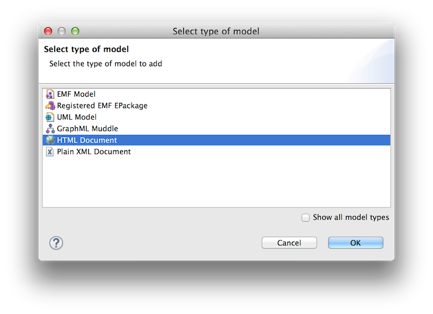

Scripting HTML Documents using Epsilon¶
In this article we demonstrate how you can create, query and modify HTML documents in Epsilon programs using the HTML driver. All the examples in this article demonstrate using EOL to script HTML documents. However, it's worth stressing that HTML documents are supported throughout Epsilon. Therefore, you can use Epsilon to (cross-)validate, transform (to other models or to text), compare and merge your HTML documents.
Querying a HTML document¶
We use the following sales.html as a base for demonstrating the EOL syntax for querying HTML documents.
<html>
<body>
<table border="1">
<thead>
<tr>
<th>Product id</th>
<th>Unit price</th>
<th>Quantity</th>
</tr>
</thead>
<tbody>
<tr>
<td>P1</td>
<td>10</td>
<td>15</td>
</tr>
<tr>
<td>P2</td>
<td>8</td>
<td>12</td>
</tr>
</tbody>
</table>
</body>
</html>
Querying/modifying HTML documents in EOL¶
The HTML driver uses predefined naming conventions to allow developers to programmatically access and modify HTML documents in a concise way. This section outlines the supported conventions in the form of questions and answers followed by relevant examples.
How can I access elements by tag name?¶
The t_ prefix in front of the name of the tag is used to represent a type, instances of which are all the elements with that tag. For instance, t_td.all can be used to get all elements tagged as <td> (table cells) in the document, t_tr.all to retrieve all <tr> elements (table rows) etc. Also, if cell is an element with a <td> tag, then cell.isTypeOf(t_td) shall return true.
// Get all <td> elements
var cells = t_td.all;
// Get a random table cell
var cell = cells.random();
// Check if cell is a td
// Prints 'true'
cell.isTypeOf(t_td).println();
// Check if cell is a tr
// Prints 'false'
cell.isTypeOf(t_tr).println();How can I get the tag name of an element?¶
You can use the .tagName property for this purpose. For instance, if cell is an element tagged as <td>, cell.tagName shall return td. The tagName property is read-only.
// Get a random <td> element
var cell = t_td.all.random();
// Print its tag
// Prints 'td'
cell.tagName.println();How can I get/set the attributes of an element?¶
You can use the attribute name as a property of the element object, prefixed by a_. For example, if t is the first table of sales.html, t.a_border will return 1. Attribute properties are read/write.
In this example, t.a_border will return 1 as a string. For 1 to be returned as an integer instead, the i_ prefix should be used instead (i.e. t.i_border. The driver also supports the following preffixes: b_ for boolean, s_ for string (alias of a_) and r_ for real values.
// Get the one and only table in the document
var table = t_table.all.first();
// Prints 11 (the border attribute is retrieved as string)
(table.a_border + 1).println();
// Prints 2 (the border attribute is retrieved as integer)
(table.i_border + 1).println();How can I get/set the text of an element?¶
You can use the .text read-write property for this.
for (cell in t_td.all) {
cell.text.println();
}How do I get the parent of an element?¶
You can use the .parentNode read-only property to retrieve the element's immediate parent and the .parents. read-only property to retrieve all the ancestors of the element.
// Get a random cell
var cell = t_td.all.random();
// Print the tag of its parent node
// Prints 'tr'
cell.parentNode.tagName.println();
// Print the tags of all its ancestors
// Prints 'Sequence {tr, tbody, table, body, html}'
cell.parents.tagName.println();How do I get the children of an element?¶
You can use the .children read-only property for this.
// Get the <tbody> element
var tbody = t_tbody.all.first();
// Iterate through its children
for (tr in tbody.children) {
// Print the tag of each child
tr.tagName.println();
}How do I get child elements with a specific tag name?¶
Using what you've learned so far, you can do this using a combination of the .children property and the select/selectOne() operations. However, the driver also supports e_ and c_-prefixed shorthand properties for accessing one or a collection of elements with the specified name respectively. e_ and c_ properties are read-only.
// Get a random tr
var row = t_tr.all.random();
// Get its <td> children using the
// .children property
var cells = row.children.select(a|a.tagName = "td");
// Do the same using the shorthand
cells = row.c_td;
// Get the first td child of the row
row.e_td.text.println();How do I create an element?¶
You can use the new operator for this.
// Check how many <tr> are in the document
// Prints '3'
t_tr.all.size().println();
// Creates a new tr element
var row = new t_tr;
// Check again
// Prints '4'
t_tr.all.size().println();How can I add a child to an existing element?¶
You can use the .appendChild(child) operation for this.
// Create a new row
var row = new t_tr;
// Get the tbody element
var tbody = t_tbody.all.first();
// Add the book to the library
tbody.appendChild(row);Bringing it all together¶
The following snippet computes and prints the total sales revenue.
var table = t_table.all.first();
var sum : Real;
// Iterate only through the rows under tbody
for (tr in table.e_tbody.c_tr) {
sum = sum + tr.c_td.at(1).getRealValue() *
tr.c_td.at(2).getRealValue();
}
// Prints 246.0
sum.println();
operation t_td getRealValue() {
return self.text.asReal();
}
Adding a HTML document to your launch configuration¶
To add a HTML document to your Epsilon launch configuration, you need to select "HTML document" from the list of available model types.

Then you can configure the details of your document (name, file etc.) in the screen that pops up. To load a HTML document that is not in the Eclipse workspace, untick the "Workspace file" check box and provide a full uri for your document (e.g. http://www.google.com or file:/c:/myhtml.html).

Loading a HTML document in your ANT buildfile¶
The following ANT build file demonstrates how you can use ANT to load/store and process HTML documents with Epsilon.
<project default="main">
<target name="main">
<epsilon.loadModel name="M" type="HTML">
<parameter name="readOnLoad" value="true"/>
<parameter name="storeOnDisposal" value="false"/>
<parameter name="file" file="sales.html"/>
</epsilon.loadModel>
<epsilon.eol src="sales.eol">
<model ref="M"/>
</epsilon.eol>
</target>
</project>
Loading a HTML document through Java code¶
The following excerpt demonstrates using HTML models using Epsilon's Java API.
EolModule module = new EolModule();
module.parse(new File("..."));
HtmlModel model = new HtmlModel();
model.setName("M");
model.setFile(new File("..."));
model.load();
module.getContext().getModelRepository().addModel(model);
module.getContext().setModule(module);
module.execute();
Loading a remote HTML document in Gradle¶
The example below shows a standalone Gradle file (build.gradle) that runs a set of EOL queries (queries.eol) against the HTML behind the Epsilon homepage.
configurations {
epsilon
}
repositories {
maven {
url "https://oss.sonatype.org/content/repositories/snapshots"
}
mavenCentral()
}
dependencies {
epsilon 'org.eclipse.epsilon:org.eclipse.epsilon.workflow:2.3.0-SNAPSHOT'
epsilon 'org.eclipse.epsilon:org.eclipse.epsilon.emc.html:2.3.0-SNAPSHOT'
}
task setupEpsilonTasks {
// Set up the core Epsilon tasks
ant.taskdef(resource: 'org/eclipse/epsilon/workflow/tasks/tasks.xml',
classpath: configurations.epsilon.asPath, loaderref: 'epsilon')
// Set logging level to info so that EOL's println() is not suppressed
ant.lifecycleLogLevel = 'INFO'
}
task run {
dependsOn tasks.setupEpsilonTasks
// Load the eclipse.org/epsilon webpage as a HTML model
ant.'epsilon.loadModel'(name: 'HTML', type: 'HTML',
impl: 'org.eclipse.epsilon.emc.html.HtmlModel',)
{ parameter(name: 'uri', value: 'https://www.eclipse.org/epsilon/') }
// Run query.eol against it
ant.'epsilon.eol'(src: 'queries.eol'){ model(ref: 'HTML') }
}
// Print the text of all <strong> elements
for (s in t_strong.all) {
s.text().println();
}
// Print all links that point to external websites
for (link in t_a.all) {
if (link.a_href.startsWith("http")) {
link.a_href.println();
}
}
// Print the text of all <li> elements which are
// children of the <ul> that's the first sibling
// of the "Why Epsilon?" <h2>
var whyEpsilon = t_h2.all.selectOne(h2|h2.text.startsWith("Why Epsilon"));
var ul = whyEpsilon.nextElementSibling();
for (li in ul.c_li) {
li.text.println();
}Additional resources¶
The Epsilon HTML driver leverages the excellent Jsoup HTML parser. In fact, all elements returned via EOL queries are instances of the org.jsoup.nodes.Element class and as such, all methods of the class can be invoked on them through EOL.